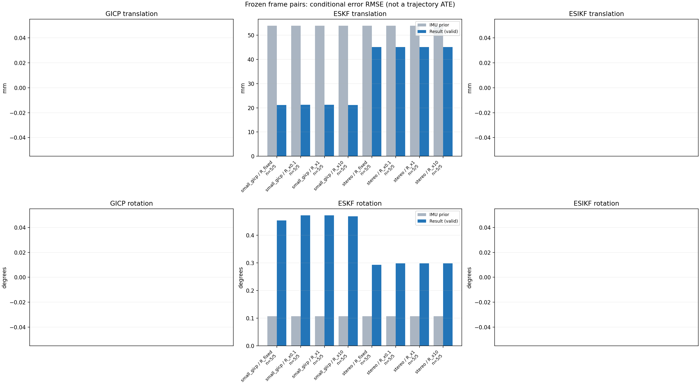

20261015_113028_roll_right · depth=disparity_cache · cache=b2a18bd08f602479a239
模型视差：/home/ubuntu22/slam/SIO_SLAM/models/tensorrt/disp_896x448_fp16.plan；engine SHA256=604cf6ac1f705c877260711730dd5d2d58c2a21f3020c03c668401ef7fb1e768。输入为生产裁剪与光照处理后的 RGB 0..255；此实验使用原始浮点像素视差，不应用完整前端的邻域视差后处理。
原始 ONNX SHA256：e9f49736a65d68d06681add463866b6defdf78fdd7f4f50f6cc941b682fdc0bc。
代价体图改写验证：ONNX Runtime 固定随机特征输入，最大绝对误差 0；该项检查图改写，完整模型精度仍需由录制数据评估。
配准代码版本：744ac2d993ae629b0cc44a3b1d995e04ab4fad48；观测生成版本：744ac2d993ae629b0cc44a3b1d995e04ab4fad48。
固定图像对与纯 IMU 先验；ESKF 回放固定 GICP 观测，ESIKF 直接读取点云。真值只用于此报告。
同时查看 converged 与 solver_status：上游默认 Stereo 在 max_iter / stopped_at_minimum 时也可能置 converged=true。valid 表示输入检查通过，不表示精度提升。欧氏 GICP 未提供独立的点距 RMSE，该列显示 NaN。
误差按每对图像的锚点计算，单位 m / degrees。此处 RMSE 不是全序列 ATE；末帧受同一锚点条件约束。NIS 与条件马氏距离是诊断量，少量相关图像对不能用于宣称协方差已校准。
全部指标 CSV · R / P / K 矩阵 CSV · Stereo 求解逐轮 CSV · ESIKF 逐轮 CSV · 配置快照 · 矢量图
| stage | method | variant | valid | total | translation RMSE (m) | rotation RMSE (deg) |
|---|---|---|---|---|---|---|
| eskf | small_gicp | R_fixed | 5 | 5 | 0.021195 | 0.45345 |
| eskf | small_gicp | R_x0.1 | 5 | 5 | 0.021286 | 0.47223 |
| eskf | small_gicp | R_x1 | 5 | 5 | 0.021278 | 0.47183 |
| eskf | small_gicp | R_x10 | 5 | 5 | 0.021203 | 0.46826 |
| eskf | stereo | R_fixed | 5 | 5 | 0.045126 | 0.29345 |
| eskf | stereo | R_x0.1 | 5 | 5 | 0.045127 | 0.29852 |
| eskf | stereo | R_x1 | 5 | 5 | 0.045127 | 0.29852 |
| eskf | stereo | R_x10 | 5 | 5 | 0.045127 | 0.29852 |

| stage | case | method | variant | status | solver_status | inliers | converged | covariance_convention | covariance_from_hessian | fitness | registration_rmse_m | prior_trans_error_m | result_trans_error_m | prior_rot_error_deg | result_rot_error_deg | R_rot_trace_rad2 | R_pos_trace_m2 | nis_regularized |
|---|---|---|---|---|---|---|---|---|---|---|---|---|---|---|---|---|---|---|
| eskf | static_start | small_gicp | R_x0.1 | updated | 10141 | 1 | right_source_body | 1 | 0.97052 | nan | 7.6181e-05 | 0.011189 | 0.0061233 | 0.25272 | 2.9158e-07 | 4.6267e-06 | 0.033711 | |
| eskf | static_start | small_gicp | R_x1 | updated | 10141 | 1 | right_source_body | 1 | 0.97052 | nan | 7.6181e-05 | 0.011163 | 0.0061233 | 0.25261 | 2.9158e-06 | 4.6267e-05 | 0.033645 | |
| eskf | static_start | small_gicp | R_x10 | updated | 10141 | 1 | right_source_body | 1 | 0.97052 | nan | 7.6181e-05 | 0.010912 | 0.0061233 | 0.25155 | 2.9158e-05 | 0.00046267 | 0.033 | |
| eskf | static_start | small_gicp | R_fixed | updated | 10141 | 1 | right_source_body | 1 | 0.97052 | nan | 7.6181e-05 | 0.010579 | 0.0061233 | 0.23868 | 0.00022846 | 0.0012 | 0.031516 | |
| eskf | static_start | stereo | R_x0.1 | updated | max_iter | 9433 | 1 | left_target_body | 1 | 0.89855 | 0.046033 | 7.6181e-05 | 0.0011134 | 0.0061233 | 0.015406 | 1.3543e-09 | 1.2978e-08 | 0.00020696 |
| eskf | static_start | stereo | R_x1 | updated | max_iter | 9433 | 1 | left_target_body | 1 | 0.89855 | 0.046033 | 7.6181e-05 | 0.0011134 | 0.0061233 | 0.015405 | 1.3543e-08 | 1.2978e-07 | 0.00020696 |
| eskf | static_start | stereo | R_x10 | updated | max_iter | 9433 | 1 | left_target_body | 1 | 0.89855 | 0.046033 | 7.6181e-05 | 0.0011133 | 0.0061233 | 0.015404 | 1.3543e-07 | 1.2978e-06 | 0.00020694 |
| eskf | static_start | stereo | R_fixed | updated | max_iter | 9433 | 1 | left_target_body | 1 | 0.89855 | 0.046033 | 7.6181e-05 | 0.0010674 | 0.0061233 | 0.014394 | 0.00022846 | 0.0012 | 0.00019471 |
| eskf | sync_motion | small_gicp | R_x0.1 | updated | 9845 | 1 | right_source_body | 1 | 0.92311 | nan | 0.00070607 | 0.019623 | 0.0094797 | 0.25516 | 3.269e-07 | 4.9069e-06 | 0.12654 | |
| eskf | sync_motion | small_gicp | R_x1 | updated | 9845 | 1 | right_source_body | 1 | 0.92311 | nan | 0.00070607 | 0.019598 | 0.0094797 | 0.25303 | 3.269e-06 | 4.9069e-05 | 0.12505 | |
| eskf | sync_motion | small_gicp | R_x10 | updated | 9845 | 1 | right_source_body | 1 | 0.92311 | nan | 0.00070607 | 0.019381 | 0.0094797 | 0.23461 | 3.269e-05 | 0.00049069 | 0.11189 | |
| eskf | sync_motion | small_gicp | R_fixed | updated | 9845 | 1 | right_source_body | 1 | 0.92311 | nan | 0.00070607 | 0.019479 | 0.0094797 | 0.20019 | 0.00022846 | 0.0012 | 0.071691 | |
| eskf | sync_motion | stereo | R_x0.1 | updated | max_iter | 9585 | 1 | left_target_body | 1 | 0.89714 | 0.07899 | 0.00070607 | 0.0021725 | 0.0094797 | 0.014401 | 1.3951e-09 | 1.3343e-08 | 0.00027167 |
| eskf | sync_motion | stereo | R_x1 | updated | max_iter | 9585 | 1 | left_target_body | 1 | 0.89714 | 0.07899 | 0.00070607 | 0.0021725 | 0.0094797 | 0.014401 | 1.3951e-08 | 1.3343e-07 | 0.00027166 |
| eskf | sync_motion | stereo | R_x10 | updated | max_iter | 9585 | 1 | left_target_body | 1 | 0.89714 | 0.07899 | 0.00070607 | 0.0021724 | 0.0094797 | 0.014399 | 1.3951e-07 | 1.3343e-06 | 0.00027156 |
| eskf | sync_motion | stereo | R_fixed | updated | max_iter | 9585 | 1 | left_target_body | 1 | 0.89714 | 0.07899 | 0.00070607 | 0.0021662 | 0.0094797 | 0.012848 | 0.00022846 | 0.0012 | 0.00016933 |
| eskf | main_motion | small_gicp | R_x0.1 | updated | 12390 | 1 | right_source_body | 1 | 0.93186 | nan | 0.001643 | 0.029406 | 0.075969 | 0.44919 | 2.3843e-07 | 4.6318e-06 | 0.0076904 | |
| eskf | main_motion | small_gicp | R_x1 | updated | 12390 | 1 | right_source_body | 1 | 0.93186 | nan | 0.001643 | 0.029405 | 0.075969 | 0.44914 | 2.3843e-06 | 4.6318e-05 | 0.0076787 | |
| eskf | main_motion | small_gicp | R_x10 | updated | 12390 | 1 | right_source_body | 1 | 0.93186 | nan | 0.001643 | 0.029398 | 0.075969 | 0.44872 | 2.3843e-05 | 0.00046318 | 0.0075636 | |
| eskf | main_motion | small_gicp | R_fixed | updated | 12390 | 1 | right_source_body | 1 | 0.93186 | nan | 0.001643 | 0.029407 | 0.075969 | 0.44571 | 0.00022846 | 0.0012 | 0.0067729 | |
| eskf | main_motion | stereo | R_x0.1 | updated | max_iter | 11837 | 1 | left_target_body | 1 | 0.89127 | 0.066401 | 0.001643 | 0.0015326 | 0.075969 | 0.076253 | 1.0674e-09 | 1.1922e-08 | 0.00010489 |
| eskf | main_motion | stereo | R_x1 | updated | max_iter | 11837 | 1 | left_target_body | 1 | 0.89127 | 0.066401 | 0.001643 | 0.0015326 | 0.075969 | 0.076253 | 1.0674e-08 | 1.1922e-07 | 0.00010489 |
| eskf | main_motion | stereo | R_x10 | updated | max_iter | 11837 | 1 | left_target_body | 1 | 0.89127 | 0.066401 | 0.001643 | 0.0015325 | 0.075969 | 0.076253 | 1.0674e-07 | 1.1922e-06 | 0.00010487 |
| eskf | main_motion | stereo | R_fixed | updated | max_iter | 11837 | 1 | left_target_body | 1 | 0.89127 | 0.066401 | 0.001643 | 0.0015318 | 0.075969 | 0.076429 | 0.00022846 | 0.0012 | 9.1289e-05 |
| eskf | main_motion_long | small_gicp | R_x0.1 | updated | 12069 | 1 | right_source_body | 1 | 0.79188 | nan | 0.0098867 | 0.020892 | 0.22748 | 0.61764 | 2.7342e-07 | 5.2844e-06 | 0.073465 | |
| eskf | main_motion_long | small_gicp | R_x1 | updated | 12069 | 1 | right_source_body | 1 | 0.79188 | nan | 0.0098867 | 0.020893 | 0.22748 | 0.61728 | 2.7342e-06 | 5.2844e-05 | 0.073303 | |
| eskf | main_motion_long | small_gicp | R_x10 | updated | 12069 | 1 | right_source_body | 1 | 0.79188 | nan | 0.0098867 | 0.020901 | 0.22748 | 0.61381 | 2.7342e-05 | 0.00052844 | 0.071716 | |
| eskf | main_motion_long | small_gicp | R_fixed | updated | 12069 | 1 | right_source_body | 1 | 0.79188 | nan | 0.0098867 | 0.020879 | 0.22748 | 0.5845 | 0.00022846 | 0.0012 | 0.060847 | |
| eskf | main_motion_long | stereo | R_x0.1 | updated | max_iter | 11778 | 1 | left_target_body | 1 | 0.76342 | 0.087208 | 0.0098867 | 0.0077845 | 0.22748 | 0.26314 | 1.1409e-09 | 1.346e-08 | 0.0064915 |
| eskf | main_motion_long | stereo | R_x1 | updated | max_iter | 11778 | 1 | left_target_body | 1 | 0.76342 | 0.087208 | 0.0098867 | 0.0077845 | 0.22748 | 0.26314 | 1.1409e-08 | 1.346e-07 | 0.0064914 |
| eskf | main_motion_long | stereo | R_x10 | updated | max_iter | 11778 | 1 | left_target_body | 1 | 0.76342 | 0.087208 | 0.0098867 | 0.0077843 | 0.22748 | 0.26313 | 1.1409e-07 | 1.346e-06 | 0.0064905 |
| eskf | main_motion_long | stereo | R_fixed | updated | max_iter | 11778 | 1 | left_target_body | 1 | 0.76342 | 0.087208 | 0.0098867 | 0.0077836 | 0.22748 | 0.25508 | 0.00022846 | 0.0012 | 0.005541 |
| eskf | static_end | small_gicp | R_x0.1 | updated | 9727 | 1 | right_source_body | 1 | 0.96155 | nan | 0.1201 | 0.021307 | 0.0045728 | 0.63465 | 4.0424e-07 | 4.5482e-06 | 0.025902 | |
| eskf | static_end | small_gicp | R_x1 | updated | 9727 | 1 | right_source_body | 1 | 0.96155 | nan | 0.1201 | 0.021303 | 0.0045728 | 0.63444 | 4.0424e-06 | 4.5482e-05 | 0.025883 | |
| eskf | static_end | small_gicp | R_x10 | updated | 9727 | 1 | right_source_body | 1 | 0.96155 | nan | 0.1201 | 0.021264 | 0.0045728 | 0.63237 | 4.0424e-05 | 0.00045482 | 0.025693 | |
| eskf | static_end | small_gicp | R_fixed | updated | 9727 | 1 | right_source_body | 1 | 0.96155 | nan | 0.1201 | 0.021308 | 0.0045728 | 0.62509 | 0.00022846 | 0.0012 | 0.025012 | |
| eskf | static_end | stereo | R_x0.1 | updated | max_iter | 7752 | 1 | left_target_body | 1 | 0.76806 | 0.10658 | 0.1201 | 0.10056 | 0.0045728 | 0.60835 | 1.9623e-09 | 1.9433e-08 | 0.024552 |
| eskf | static_end | stereo | R_x1 | updated | max_iter | 7752 | 1 | left_target_body | 1 | 0.76806 | 0.10658 | 0.1201 | 0.10056 | 0.0045728 | 0.60835 | 1.9623e-08 | 1.9433e-07 | 0.024552 |
| eskf | static_end | stereo | R_x10 | updated | max_iter | 7752 | 1 | left_target_body | 1 | 0.76806 | 0.10658 | 0.1201 | 0.10056 | 0.0045728 | 0.60834 | 1.9623e-07 | 1.9433e-06 | 0.024551 |
| eskf | static_end | stereo | R_fixed | updated | max_iter | 7752 | 1 | left_target_body | 1 | 0.76806 | 0.10658 | 0.1201 | 0.10056 | 0.0045728 | 0.59939 | 0.00022846 | 0.0012 | 0.023549 |